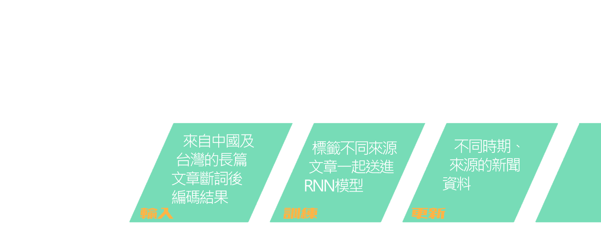

資訊戰加劇的現代社會，辨識資訊的真假變得更加困難，假新聞充斥版面，資訊的揀選對閱聽人來說變得更加困難。


中國政府對台的侵略政策也是天羅地網，無孔不入，資訊普及的社會反而讓我們失去了保護；網軍滲透及學習的速度變得更加快速，有時人們也在無意中轉發、分享，幫錯誤資訊推了一把。 雖然許多網路使用者已開始對消息的真實度懂得產生疑問，但在提出質疑的同時也常常淪為口水戰，最終仍無法有效、系統化的去辨別資訊的可靠性，人們對於資訊的不信任感越來越高。
→ MK250: 垃圾五毛又來反串摟
推 dfast: 支那低能狗 滾
噓 kkjjrtlym: 笑死 一堆黑單出現推文
推 HiranoMiu: 那id又不是第一次被點名
→ simonscott88: 護航造謠的大概是同路人 垃圾
推 tanted: 有人開始護航察假風向 就是戒嚴 共產黨
噓 psee: 一個上站466次的說別人網軍我也是笑笑
來源：批踢踢實業坊(ptt.cc) #1Rd83-NW (Gossiping)
隨著科技日新月異，資訊消息傳播的越來越廣、越來越快，資訊戰的戰火只會越燒越烈；而同樣的中國政府對台的侵略也不會一夕間嘎然而止，面對這樣的羅生門，我們不禁想知道
真正的問題是什麼？
我們沒辦法阻止有心人士散播不實消息，但我們可以選擇提升閱聽人的媒體識讀能力，不再只當個被動的接收者。 與其讓機器武斷的去辨別文章的真假，我們將問題重新定義，將目標設為：「識別中文文章來源」。有鑑於中國方對台的一直以來的侵略態度，若能在閱讀時能夠注意到文章是來自於中國，便能更謹慎的汲取資訊，不讓自己在無意間被中國統一思想潛移默化。
我們蒐集了中國及台灣兩個資金主要來源為政府的媒體：人民日報以及中央社，總計約五萬則新聞，將文章全數轉成正體中文後，使用中研院所開發的ckip斷詞工具處理，建立自己的詞庫，再將詞庫送給RNN神經網路訓練。